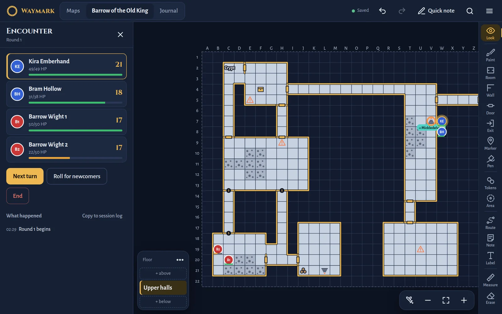
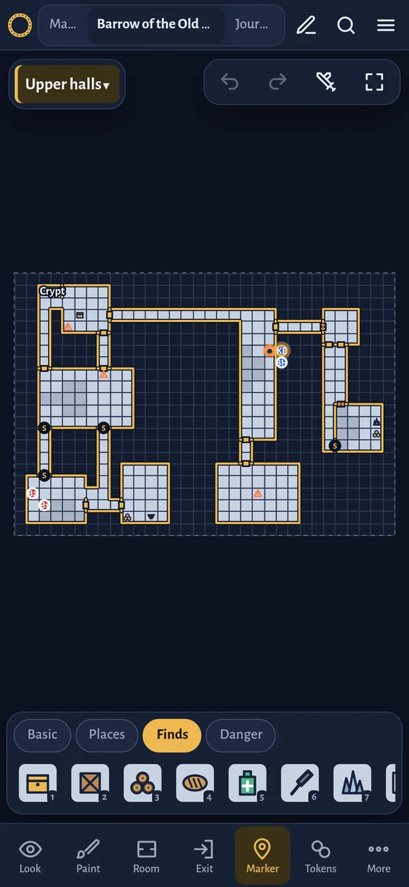

Draw the dungeon as the GM describes it.
Waymark is a free app for Android phones and tablets. Map each room as you explore, keep your notes in one place, and play out fights on the same grid.
Download Waymark
Version 1.4, 2 November 2026
For Android, 1.1 MB
For Android, 1.1 MB
Already have it? Download and install the new version over the old one. Your maps and notes stay.


What it’s for
- Mapping while you play. Type the size the GM gives you, like 30x20ft, and the room appears with its walls. Add doors, stairs, traps and treasure as you find them.
- Keeping track of the world. Maps have floors, and exits link one map to the next, so you always know which stairway leads where.
- Remembering everything. A journal for sessions, people, places, clues and open questions, plus your PDFs and your party’s supplies.
- Trying out a fight. Import characters from Pathbuilder 2e, add creatures, and roll initiative, attacks and spells on the map.
- Sharing with your party. Send maps to friends and merge what everyone drew. Back everything up to your own Google Drive.
New to it? The guide shows how each part works.
Installing it
- On your Android phone or tablet, tap Download Waymark. If Chrome warns that this type of file can be harmful, tap Download anyway.
- Open the downloaded file. If Android asks, allow your browser to install apps.
- Google Play Protect may warn that it doesn’t know the developer, because Waymark isn’t in the Play Store. Choose to install anyway. The exact wording differs between phones.
- Open Waymark, then go to Settings (the ☰ button) and connect Google Drive so your work is backed up.
What’s new in 1.4
- Backups to your own Google Drive, made automatically when you leave the app.
- The app is now called Waymark.
See every version.
Your data stays yours
Everything you make is stored on your own device. Waymark has no accounts, no servers, no ads and no tracking. If you connect Google Drive, it saves backups to a folder in your Drive and can only see the files it created there. The privacy policy explains exactly what happens.
Waymark is a free, personal project made for a group of friends. It isn’t affiliated with Google, Paizo or Pathbuilder.